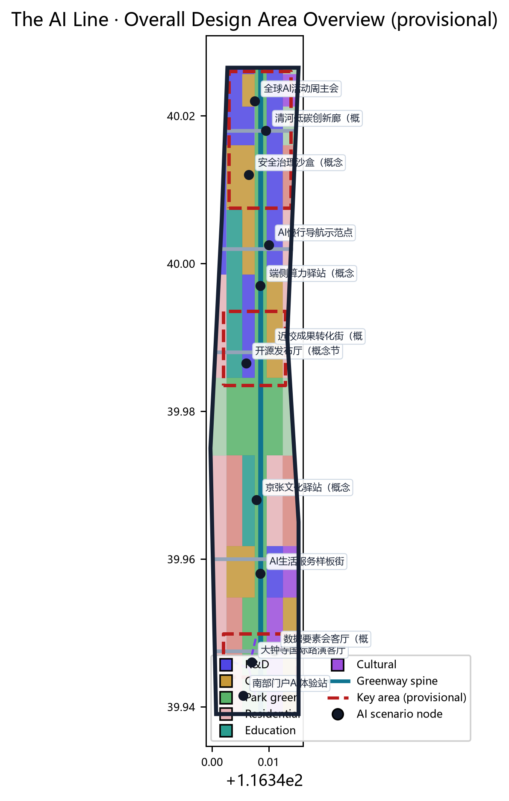
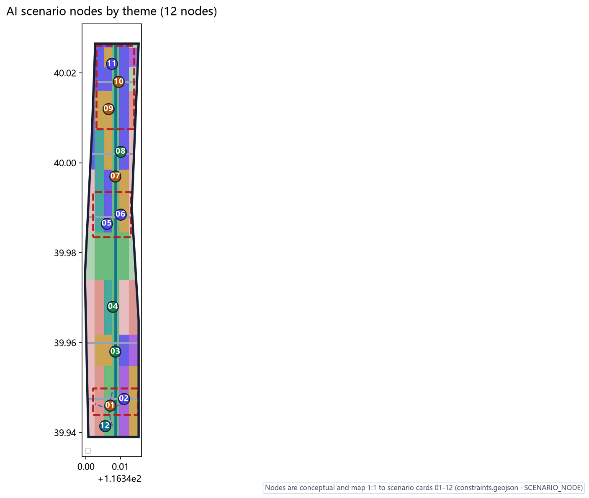
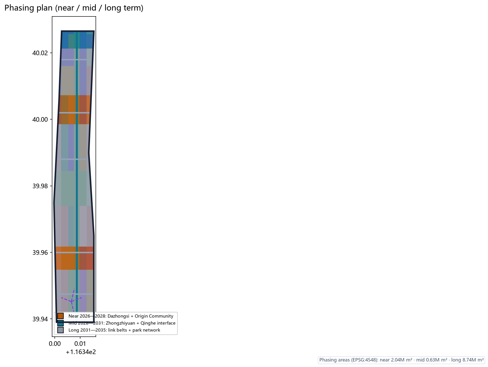

Overall study · 43.6 km²
AI industry ecosystem, three-district/two-wing synergy, future-city form, and brand narrative.
- Three positions: heritage belt / AI-life belt / AI-innovation belt
- Five-function synergy loop
- Six global AI-ecosystem references
Offline display board (visual/index.en.html). The authoritative data layer remains geometry/*.geojson, metrics.json, sources.json, assumptions.json, the three matrices, and self_check.json; this page translates the overview map, three-level scope, key areas, land use, mobility, blue-green space, buildings and renewal, AI scenarios, core metrics, task coverage, self-check status, sources and assumptions into a human-readable board. All spatial conclusions use provisional boundaries and are concept-level suggestions.
The overview map combines land use, mobility, blue-green space, key areas, and AI scenario nodes into one evidence map, showing the "one belt, three cores, two wings, many nodes" spatial mainline.

The scheme proceeds from overall study, to overall design, to key areas, binding industrial judgment, urban renewal, and key-area design to layers and metrics.
AI industry ecosystem, three-district/two-wing synergy, future-city form, and brand narrative.
Regulatory-depth urban design: land use, renewal framework, mobility, municipal services, heritage park spine.
Detailed design of the three key areas: functions, building renewal, public space, mobility.
Each key area is given positioning, spatial actions, building renewal, slow traffic, public space, AI scenarios, and implementation risks (directional, provisional polygons).
Garden full-stack innovation district: R&D 0802 plus exhibition culture 0803, Qinghe buffer green, low-carbon corridor and safety sandbox, N-5th-Ring/Qinghe gateways.
Campus-to-street incubation and talent community: slow-traffic stitching, open-source launch hall, results-conversion street, talent services, park-node connection.
Urban intelligent economy and exchange district: station-city integration (concept), roadshow salon, data salon, four-quadrant pedestrian connectivity.
29 land-use features use national classification codes, fully cover the submitted boundary without gaps or overlaps; areas recomputed in EPSG:4548.
Greenway spine + lateral connectors + station-city links: approx. 17.07 km of road centerlines (EPSG:4548).
One spine, two wings, many nodes: Heritage Park vitality belt as spine, Qinghe/Xiaoyuehe as wings, 8 public-space nodes.
Twelve scenario cards (four industrial test-validation ★); each states location, service objects, and self-check boundaries.
Origin Community: releases, contribution wall, small roadshows.
Zhongzhiyuan: standards, safety evaluation, red-team demo & booking.
Mid link belt: new-infrastructure prototype.
Heritage Park: explainable wayfinding, gap detection.
Dazhongsi: showcase, negotiation, media, international exchange.
Zhongzhiyuan Qinghe interface: green, stormwater, cycling, AI.
Origin Community: incubation, legal, IP, financing services.
Dazhongsi: compliant, authorized, auditable data services.
South residential belt: health, education, legal, life services.
Public-space spine: walkable, shareable experience route.
Heritage Park: railway, Zhongguancun, and AI culture narrative.
South of Dazhongsi station: smart terminal experience entry.
The scenario map locates 12 AI nodes by theme; the phasing map shows near/mid/long-term implementation (concept, matching phasing.geojson).


The AI Line brand direction (1909–AI dual timeline · three-colour system · extensions) and the 2035/2050 two-stage vision (conceptual outlook).
compliance_matrix.json covers all announcement tasks 1.3, 1.4, 1.5 and agent.1–agent.6; standard_matrix.json covers five mandatory standards; design_depth_matrix.json marks all 15 depth items complete.
See sources.json, data/source_registry.json, brief/site-package/, data/processed/agent_fact_pack.md and standards/references. All are public or user-provided cleared materials; provisional boundaries come from provisional_boundaries.geojson.
Provisional boundary precision, missing regulatory conditions (floor_area_ratio=unknown), rail alignment pending, schematic footprints, concept-level scenarios, privacy boundaries — six assumptions in assumptions.json.
Run self_check_submission.py before submission; all four review categories (five check items) must PASS to enter review.
All spatial information on this page is based on provisional boundaries (official_boundary=false), usable only for generation, display, discussion, and intake self-check; not an official redline, approval basis, or precise-area basis. Recalculate and replace this page when official polygons are published.